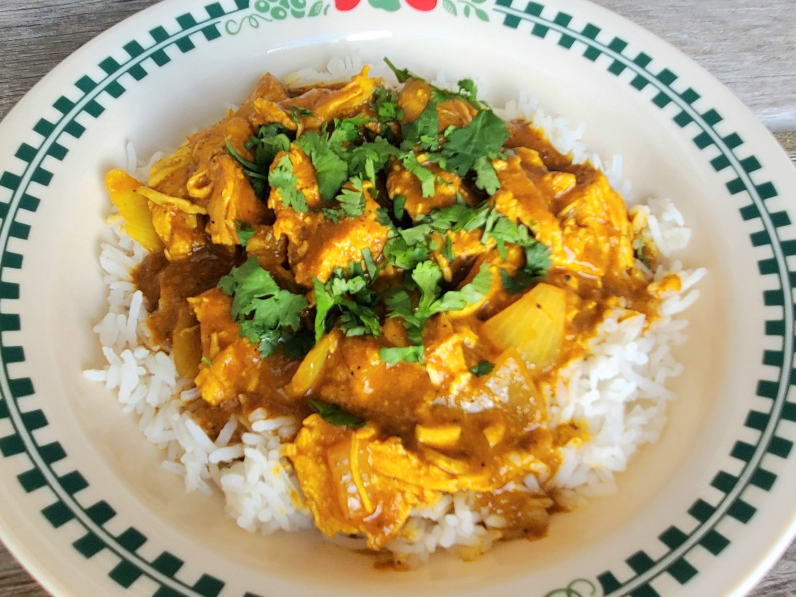

Slow Cooker Chicken Curry

This slow cooker chicken curry recipe couldn't be easier--the ingredients all go in at the same time and in just a few hours, dinner's ready! Serve over cauliflower rice sauteed with Indian spices, and garnish with fresh cilantro and a dollop of light sour cream.
Ingredients
- 3 pounds skinless, boneless chicken breast halves
- 2 (14 ounce) cans coconut milk
- 2 onions, diced
- 4 tablespoons tomato paste
- 4 tablespoons minced fresh garlic
- 4 tablespoons minced fresh ginger
- 1 tablespoon ground cumin
- 1 tablespoon ground turmeric
- 1 tablespoon garam masala (Optional)
- 1 tablespoon ground coriander
- 1 tablespoon curry powder
- 4 bay leaves
- 1 cinnamon stick
- salt and ground black pepper to taste
Steps
- Add chicken, coconut milk, onions, tomato paste, garlic, ginger, cumin, turmeric, garam masala, coriander, curry powder, bay leaves, cinnamon stick, salt, and pepper to a slow cooker.
- Cook on High until chicken is no longer pink in the center and the juices run clear, 2 to 3 hours. An instant-read thermometer inserted into the center should read at least 165 degrees F (74 degrees C). Remove and discard the bay leaves and cinnamon stick. Shred the chicken.